Estudar não é o problema. A dor do jovem é travar na decisão de por onde começar diante do bombardeio de distrações digitais.
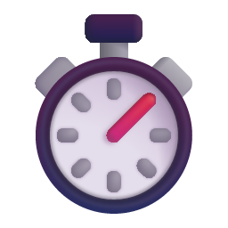
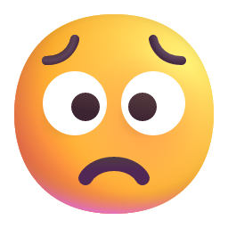
A Anatomia da ParalisiaA ciência explica: a sobrecarga desregula o cortisol, o método dos anos 80 perde para os algoritmos e o esforço do estudo parece invisível.
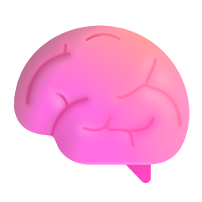
O Esforço InvisívelO LevelUp Study estrutura a rotina em um Ciclo de Estudos Fechado: Rota Inteligente > Foco RPG > Recompensa Tangível.
Uma arquitetura comportamental desenhada para aliviar a mente e blindar o foco do estudante.
Evidências acadêmicas comprovam: mecânicas de RPG autênticas aumentam a consistência e reduzem a evasão escolar.
Estudos comprovam que a ludificação estruturada com recompensas graduais reduz o abandono escolar e eleva a adesão aos estudos em até 60%.
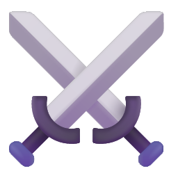
7 Classes de Especialização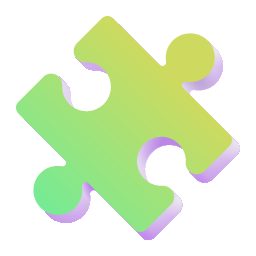
3 Atributos Mentais ProgressivosInteligência Artificial contextualizada combinada com a nossa barreira proprietária contra a dispersão.
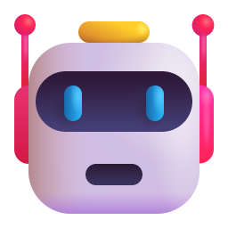
Mentor Gemini 2.5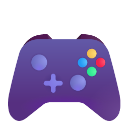
Arcade (18 Minijogos)Validação direta com alunos de preparatórios: métricas de retenção comprovadas e relato em vídeo.
"Antes, eu me distraía à toa, pegava o celular e não rendia nada. Mas usando o LevelUp Study, meu aproveitamento melhorou demais. O mais legal é que a plataforma vai me guiando no que eu tenho que fazer. Assim, eu não perco o foco e sinto que estou evoluindo nas matérias. Recomendo muito."
Inclusão social na base e monetização de alto valor agregado com B2C premium e licenciamento B2B.
Construímos do zero a solução que nós mesmos gostaríamos de ter tido quando estávamos paralisados pela procrastinação.
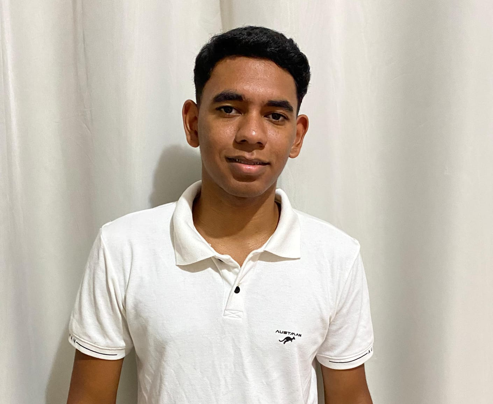
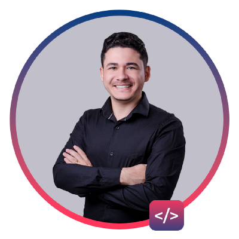
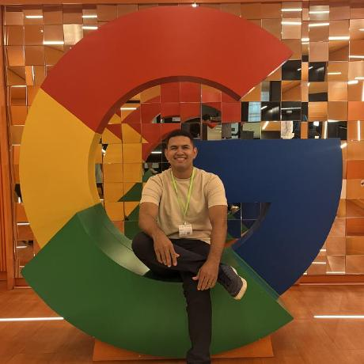
Arquitetura de alta eficiência pensada para escalabilidade frugal em servidores modestos.
Nenhum competidor do mercado resolve o elo mais fraco da rotina do jovem: a hora da pausa.
| Funcionalidade | Todoist / Notion | Forest App | LevelUp Study |
|---|---|---|---|
| Gestão de Tarefas | Excelente | Não possui | Rota Inteligente "O Que Fazer" |
| Controle de Foco | Não possui | Timer Pomodoro | Pomodoro com Batalha RPG |
| Blindagem da Pausa | Joga pro celular | Joga pro TikTok | Arcade + Cooldown 1:1 Nativo |
| Feedback Dopaminérgico | Nenhum | Árvores visuais | RPG com 7 Classes, EXP e Monstros |
Solução estruturada para transformar políticas públicas de educação e bem-estar juvenil.
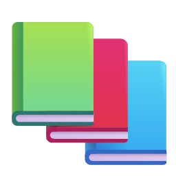
Educação de Qualidade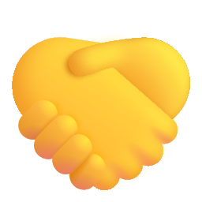
Redução das DesigualdadesSelecione qualquer slide para saltar diretamente: